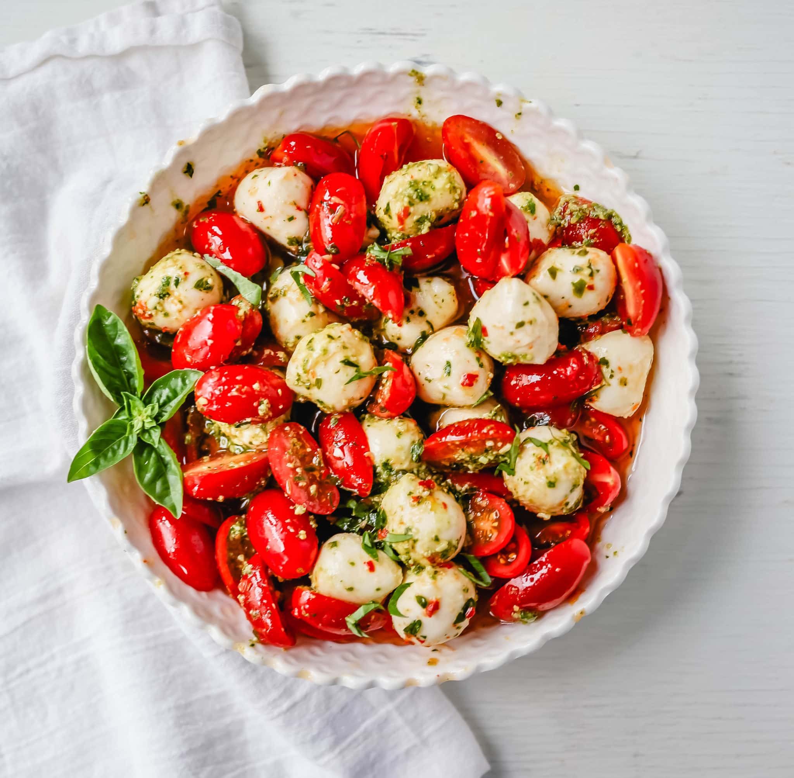

Pesto Caprese Salad

Description
Fresh cherry or grape tomatoes, vibrant pesto sauce, creamy fresh mozzarella balls, extra-virgin olive
oil, balsamic glaze, basil, and spices. A perfect summer salad recipe!
Ingredients
- 1 pint Grape or Cherry Tomatoes
- 1 teaspoon Salt
- 8 ounces Fresh Mozzarella Balls
- 2 Tablespoons Pesto Sauce
- 2 to 3 Tablespoons Extra-Virgin Olive Oil
- Balsamic Glaze (drizzle on)
- Fresh Basil
Steps
- Cut grapes in half. In a large bowl, add tomatoes. Sprinkle with salt.
Drain fresh mozzarella and toss fresh mozzarella balls, pesto sauce, olive oil, balsamic glaze,
and fresh basil into the bowl. Taste for seasoning.